【小白测评】日前，三大运营商之一的中国联通宣布其首批 5G 手机已经全部到位，包含12个品牌共15款 5G 手机及5G CPE，OPPO、vivo、华为、小米、中兴、努比亚等知名品牌均有出现。值得一提的是，首批的15款 5G 手机除了华为外，其他均使用的是高通骁龙855移动平台，而在未来 10 年中，与 5G 部署并行发展的技术领域，将是大数据的分析和运用，其核心应用就是人工智能，也就是AI。
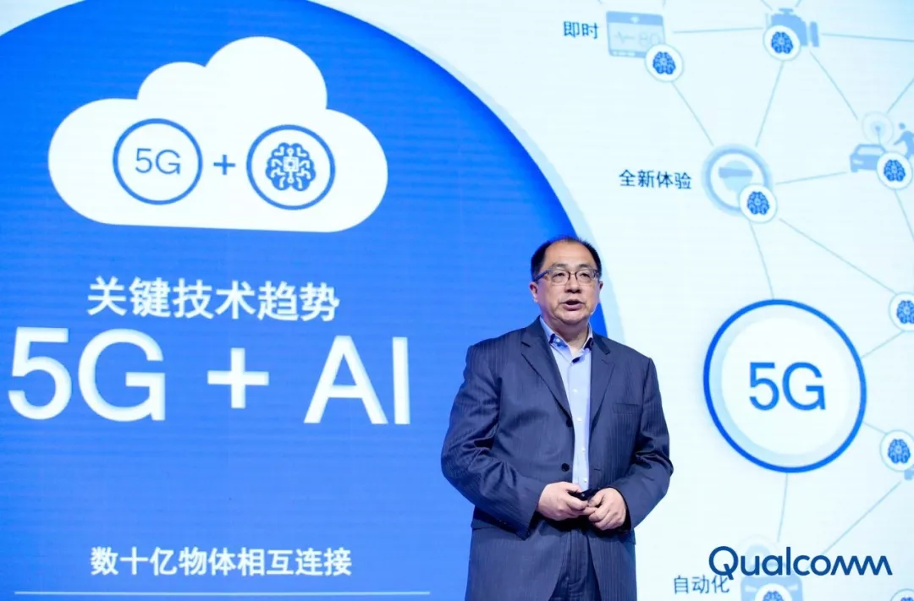
总的来说，就是在当下这个全新的科技时代，只有软硬件结合，切实利用 AI 和 5G 技术专长，才能为2019这个万物互联，AI触手可及的 5G 元年提供更多助力，让 5G 时代更快一步到来。在这点上，高通有着很清晰的布局，其与全球领先的云服务商和软件开发商合作，在4月19日的Qualcomm人工智能开放日活动中就为我们展示了非常多与生活切实相关的AI技术，也许里面有些是你很熟悉的技术应用，也许很多你会很陌生，但看完你应该可以感受到高通的AI布局能为我们生活带来多少切实的有益影响。
在4月19日举行的高通人工智能开放日上，高通的产品管理副总裁Ziad Asghar谈到无线边缘实现 5G+AI 的潜力，表示高通的 AI 战略就是将领先的 5G 连接与 AI 研发相结合，以平台式创新助力 AI 变革众多行业并开启全新体验。在高通人工智能开放日上，高通还带来了全新的Qualcomm Cloud AI 100加速器，其采用7nm制程工艺，全新高能效芯片，支持业界领先的软件栈，包括PyTorch、Glow、TensorFlow、Keras和ONNX。Qualcomm Cloud AI 100加速器与目前业界最先进的AI推理解决方案相比，每瓦特性能提升超过10倍，满足当下急剧增长的云端 AI 推理处理的需求，而且支持完整的从云端到边缘的 AI 解决方案。所有的 AI 解决方案均可与具备高速率和低时延优势的 5G 实现连接，将于今年下半年开始出样，最终实现 5G 的高容量、低时延和高可靠性的特性，支持终端实现感知、推理和行动。而终端侧 AI 也将充分发挥 5G 潜能，为 5G 开拓更多应用场景，最终为用户带来更多丰富的体验。
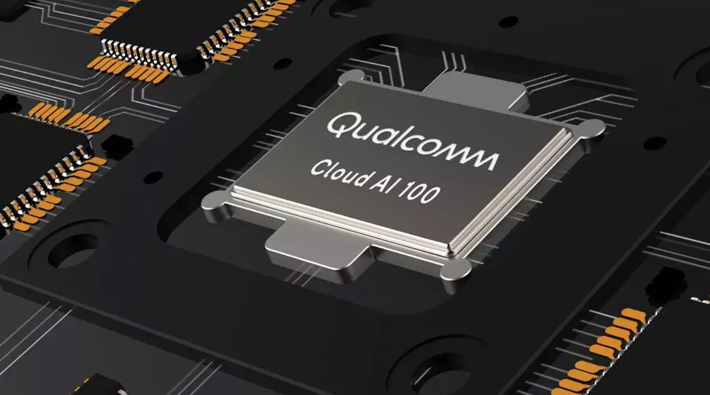
此外，高通支持完整的从云到端的 AI 解决方案。得益于高通十余年的AI研发，深厚的底蕴积累，目前在终端侧，骁龙移动平台已为超过 10 亿部智能手机提供领先的 AI 加速，其中我们感受最深的应该是今年备受手机厂商欢迎的骁龙855移动平台。
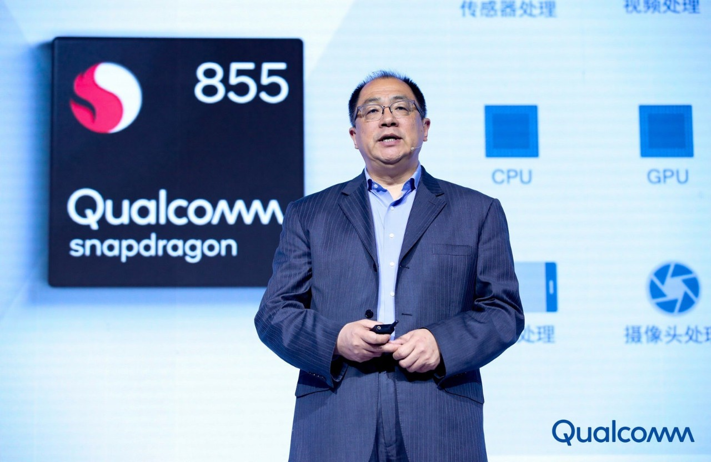
骁龙855平台集成的第四代多核 Qualcomm AI Engine ，其中包括专门面向 AI 处理而设计的全新硬件核心—— Hexagon 张量加速器（HTA）。在我们的体验中，可以明显发现搭载了它的骁龙855相比上一代产品显著提升了拍摄、游戏、语音和安全的终端侧直观交互的处理速度，举例来说，AI美颜、AI美型、超级夜景、王者荣耀手游的持续高帧率等实现都离不开它。在我们使用搭载骁龙855平台的旗舰手机中，也能感受到其非常流畅，而且功能更强大丰富。
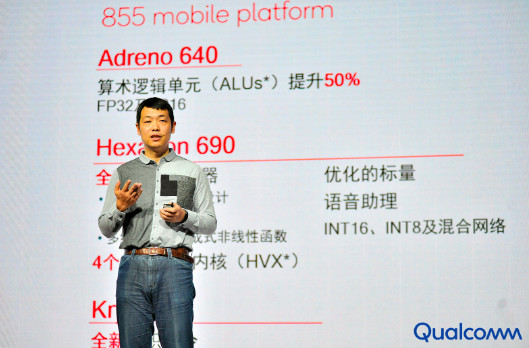
此外，骁龙855 也是全球首款商用的 5G 移动平台，与骁龙X50 5G 调制解调器搭配可以支持数千兆比特 5G 连接，相信在未来5G高速发展的几年里，高通的助力远不止如此，还将会为我们带来速度更快、效益更高的5G芯片。
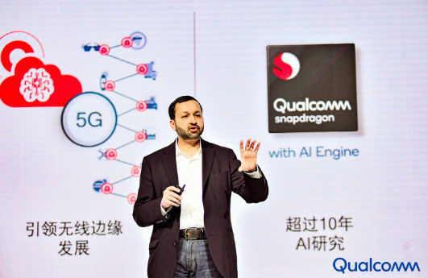
除了智能手机外，高通也面向移动计算、XR、物联网、音箱和汽车等多个领域，推出了集成其人工智能引擎 AI Engine 的产品平台，人工智能已经深入我们生活的方方面面。
高通的AI推进不仅仅体现在云端和终端侧的投入上，还体现在携手整个生态共同推进的大局观上，其与全球众多云服务厂商、终端厂商和AI软件开发商建立了深入坚实的合作关系。在高通人工智能开放日上，高通联合了近 20 家国内外合作伙伴展示了超过 40 项基于Qualcomm AI Engine 的 AI 应用。
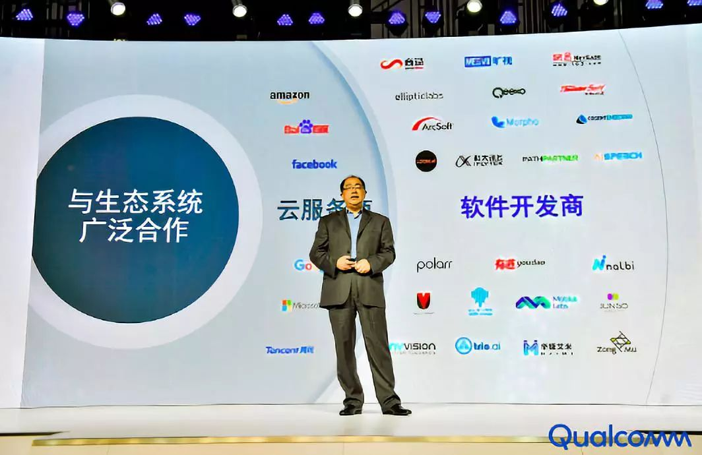
合作方不仅有我们熟悉的手机厂商，还有虹软、百度、旷视、腾讯王者荣耀、有道等企业，在智慧影音、娱乐游戏、生活工具和行业应用等方面，均展示了非常多的AI应用实例。
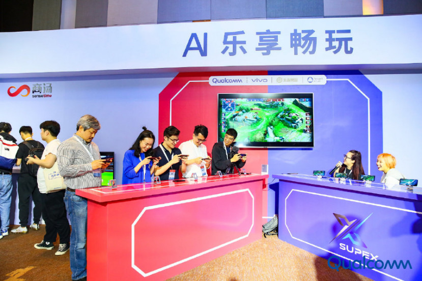
比如，高通联手vivo、王者荣耀、腾讯共同打造的移动端AI电竞战队“SUPEX”，在活动现场还和真人战队进行了PK，从英雄选择到团战操作，AI电竞战队的表现让我们惊艳，完虐真人战队，但据说该AI电竞战队不会商用，仅在实验环境中体验。
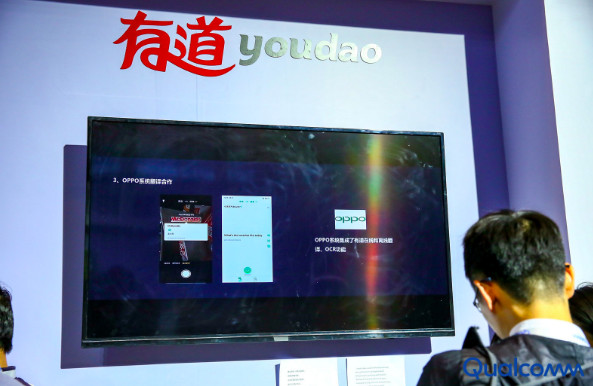
而高通联手有道打造的AI全屏翻译、智能作业本功能也有非常大的实际意义，扫一扫直接自动批改作业，不仅可以帮助家长指导孩子的学习，还可以节省很多思考的时间。
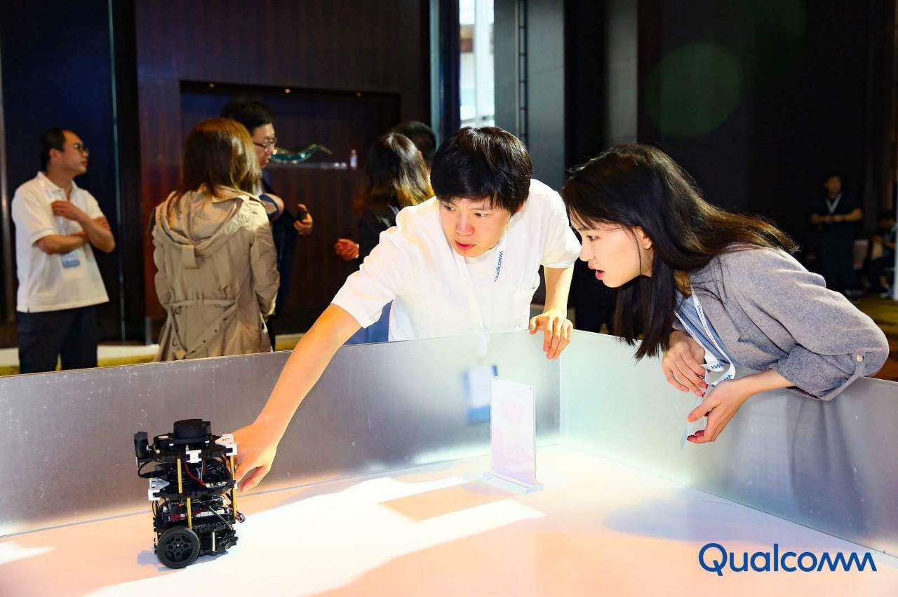
再比如高通联手中科创达打造的寻物机器人，特别适合经常丢三落四的人群，当找不到车钥匙的时候，直接语音唤醒，这个小巧袖珍的机器人就可以自动识别搜寻。
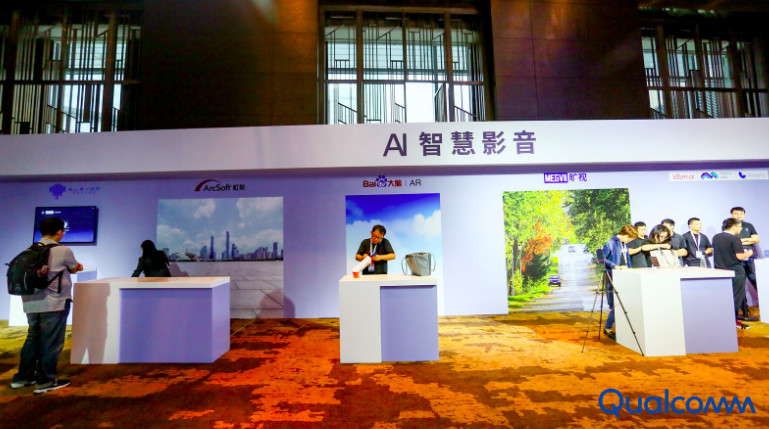
在拍照上，高通还联手虹软、旷视、百度带来了AI智能人体塑形、AI超画质拍照应用、AR酷炫视频玩法，为追求完美的摄影党增加了多种趣味性。此外，商汤的SensePhoto是基于AI技术实现，可以实时实现人像留色，将周遭背景黑白化，其支持的Sense ID人脸解锁功能也比平时的2D人脸解锁更具安全性。
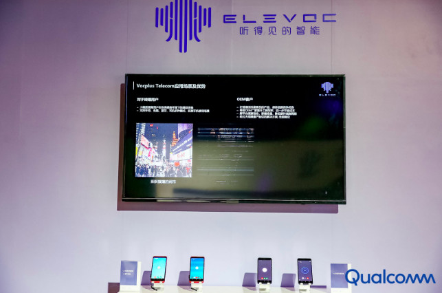
在体验上，大象声科基于高通AI Engine打造的AI通话智能降噪也让通话更清晰；旷视Megvii基于骁龙730实现3D实时人体姿态追踪，也为我们带来全新的虚实交互，不用去商场试穿衣服，在APP上就可以试衣，选择最适合自己的那件衣服。
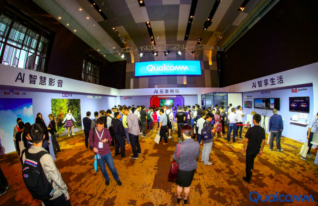
像上述的这些AI应用还有很多，高通和其合作伙伴在活动上一共展出了40多项基于Qualcomm AI Engine 的 AI 应用，对汽车行业、物联网等各行各业都带来了新技术的变革，在智能家居的贴心性、工业农业的自动化、XR技术对医疗行业的贡献等等方面的应用，也将为我们的生活带来更高效、智能的体验。
在这个需要软硬件结合的5G元年，高通携手整个生态，从云端布局到终端推广，共同构建一个万物互联的新时代，让AI触手可及，强大而丰富的AI技术已经应用或者说即将应用到我们的生活中，AI带来的贴心体验也让我们越来越离不开，你受益最深的是哪项AI技术呢？